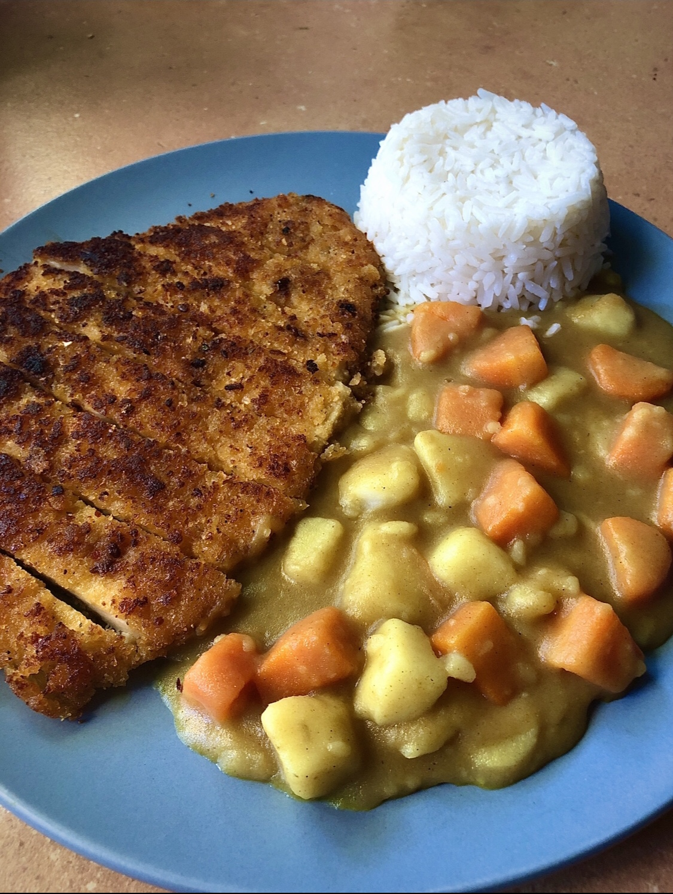

Katsu Curry

Description
Ingredients
- Salmon
- 4 Yellow Potatoes (Medium-Sized)
- 2 Carrots (Medium-Sized)
- Frozen Peas (50g)
- 1 whole egg
Steps
- Begin boiling water for potatoes.
- Small-dice both carrots, then peel all potatoes and cut the peeled potatoes into quarters.
- Boil all potato quarters in a pot with water (until tender).
- Put olive oil in a large frypan and begin frying up lamb mince, breaking it down well with a wooden spoon or other utensil.
Return to Top | Return to Home Page